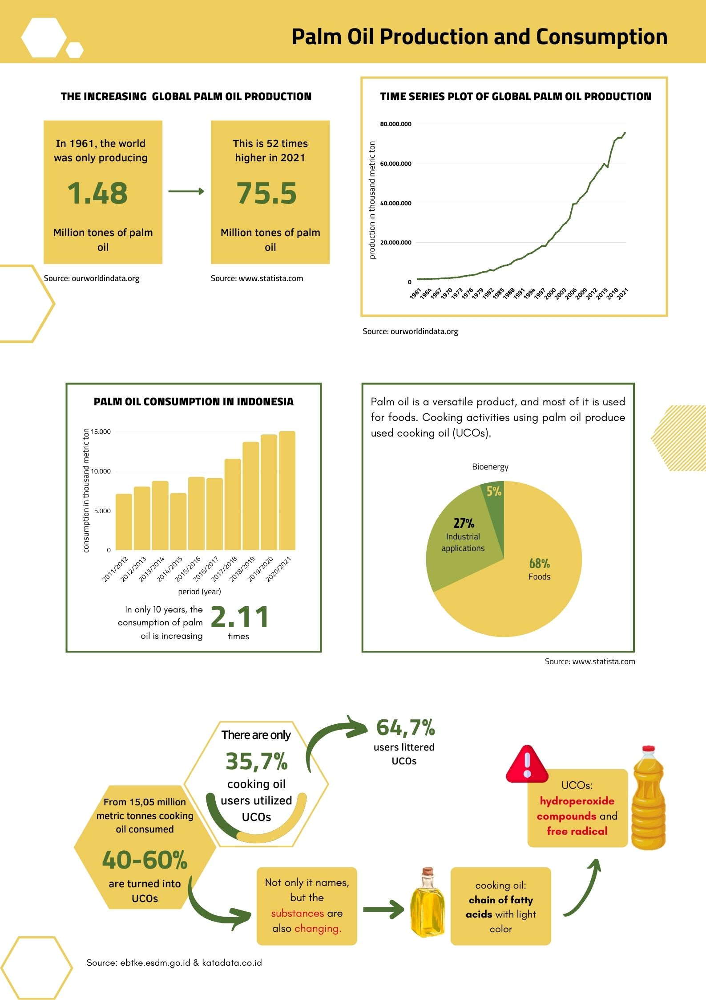
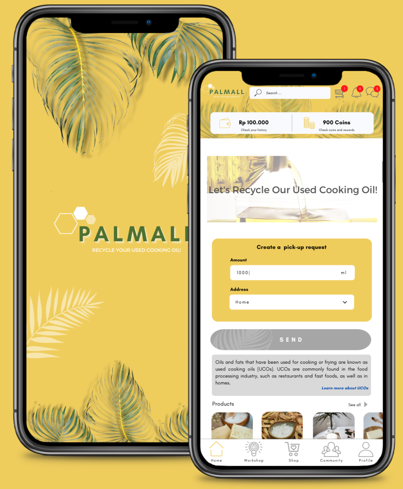
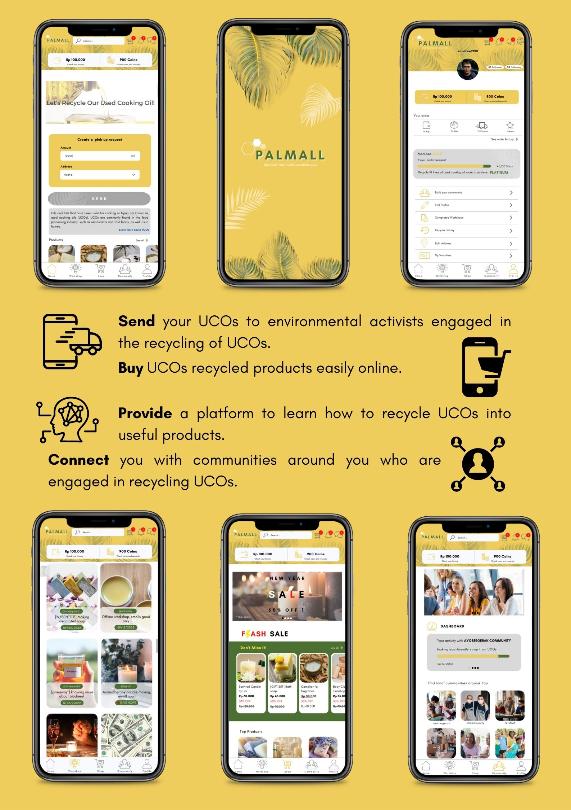

Profile

People and oily things always have a love-hate relationship. Everyone enjoys eating fries, junk food, and fatty beef. Otherwise, many of us despise seeing the fat in our thighs or the pile of fat that protrudes from our stomachs. So, which one are you?
It appears that a large portion of the population still enjoys fries, as evidenced by the world's high consumption and production of palm oil, particularly in Indonesia.In sixty years, from 1961 to 2021, the global production of palm oil has gotten 52 times higher. As well as the higher production, the consumption rate in Indonesia also increased by 2.11 times in ten years. The majority of Indonesians (68%) use it for food; only a few producers (5%) use it for bioenergy, and the rest use it for industrial purposes other than food.
"Instead of throwing it out, collect it and sell it. There is value."
Rick N. G.-Go Green Recycle Oils business advisor.
Do you know that used cooking oil (UCOs) has value?
Before going further, according to katadata.co.id, there are only 35.7% of cooking oil users who utilize UCOs. It is totally bad that most of us are UCOs waster! It is hazardous because it will clog drains, emit a rancid odor, pollute soil and water, cause us to see an unstable aquatic system, block sunlight from reaching the water, and so on.
So, here comes PALMALL! Through this application, we will let you all know more about palm oil waste (UCOs) and the use of it.
PALMALL
PALMALL aims to increase awareness in protecting the environment and economic growth.

PALMALL is an interesting platform to increase people's interest in recycling UCOs into useful products.
In the field of education, PALMALL provides a workshop feature where people can attend various workshops. The workshops will show how to utilize the UCOs. For examples:As the main ingredient for making soaps and candles or as the ingredient for making biofuel (biodiesel) and solid fragrance.
Apart from sending UCOs to collectors, we also provide a platform to sell recycled UCOs products.
Through the community feature, it is hoped that PALMALL can connect people with the same interest in recycling UCOs and protecting the environment.
With many attractive features, reasonable prices, providing benefits for both givers and recipients of UCOs, PALMALL is a trusted platform for its users.
Features

Workshop
Want to know more about what is UCOs or how to use it? PALMALL is right place for you! Let's check it out, you will find so many instructors sharing how their use the UCOs. It can be a soap, fragrance, candle, or even biofuel. You will also find the reason why UCOs are B3 waste. Stay tuned, Guys!
Buy or Sell UCOs
Yeah, we know that you are too busy to recycle UCOs. So, just sell them anyway. PALMALL third parties will pick them up for you.
Or you are the creator? Wanna buy UCOs for your recycling project? Just let us know, we also will send you the UCOs as you need, as long as you use it for good purpose.
Buy or Sell the Products
The products now are too much to be kept! Oh dear, here we are. Just sell your products on PALMALL. Lots of PALMALL user will seek for it as they gain their love to the environment.
Community
By the community you will be easier to gain your love and find the right place to learn more about UCOs and its recycling.
Targets
By recycling used cooking oils, there are a lot of impacts we will get:
Environment
Recycling UCOs for biodiesel can reduce 100% of greenhouse gas emissions (Wahid, M. B. et al., 2006). In addition, recycling UCOs will reduce soil and water pollution.
Economy
As we know, the economy is always a big problem. Let's recycle UCOs, it helps your economy for sure. Do it in PALMALL and attract people to do so. So, there are more people raise their economy.
Education
The more people know the danger, the more people do recycling. So, this is what PALMALL does, it provides education inside. We hope, we can share more knowledge about UCOs, the danger, and the use. By doing so, we can help to keep this live alive.
Register on PALMALL right now! So, it is easier for you and me reach the goal.